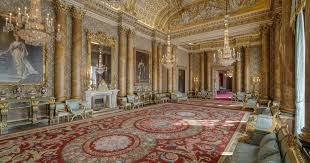

Welcome to London
London is the capital city of England and one of the most vibrant and diverse cities in the world. Here are some of the must-visit attractions in London:
Big Ben
Big Ben is the nickname for the Great Bell of the clock at the north end of the Palace of Westminster. It is an iconic symbol of London.
Tower Bridge
Tower Bridge is a combined bascule and suspension bridge that crosses the River Thames. It is an engineering marvel and a famous London landmark.

Buckingham Palace
Buckingham Palace is the official residence of the British monarch. Visitors can witness the Changing of the Guard ceremony and explore the beautiful palace grounds.

The British Museum
The British Museum houses a vast collection of art and artifacts from around the world. It is a treasure trove of human history and culture.